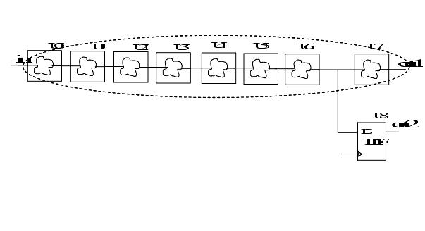

| Description | This rule shall report an error for all combinatorial path between a primary input or inout and a primary output or inout. Basically, if you can reach from an input or inout, another inout or output without being registered, you have to report an error. |
| Policy | DESIGN |
| Ruleset | STRUCTURE |
| Language | VHDL/Verilog |
| Type | Hardware |
| Severity | Error |
This is an example of invalid Verilog code, followed by a circuit diagram that illustrates the problem:
module ntl_str09_top(in, out1, out2); input in; output out1, out2; ... // combinational logic module - Combo_logic Combo_logic1 U0(.Data_in(in), Data_out(net_01)); Combo_logic1 U1(.Data_in(net_01), Data_out(net_02)); Combo_logic2 U2(.Data_in(net_02), Data_out(net_03)); Combo_logic3 U3(.Data_in(net_03), Data_out(net_04)); Combo_logic4 U4(.Data_in(net_04), Data_out(net_05)); Combo_logic5 U5(.Data_in(net_05), Data_out(net_06)); Combo_logic6 U6(.Data_in(net_06), Data_out(net_07)); Combo_logic6 U7(.Data_in(net_07), Data_out(out1)); // NTL_STR09 fires -- snake path through U0~U76 without being registered between PI: in and PO: out1 //flip-flop --DFF DFF U8( .Clock(Clock), .Din(net_07), .Dout(out2)); // OK -- out2 is registered endmodule